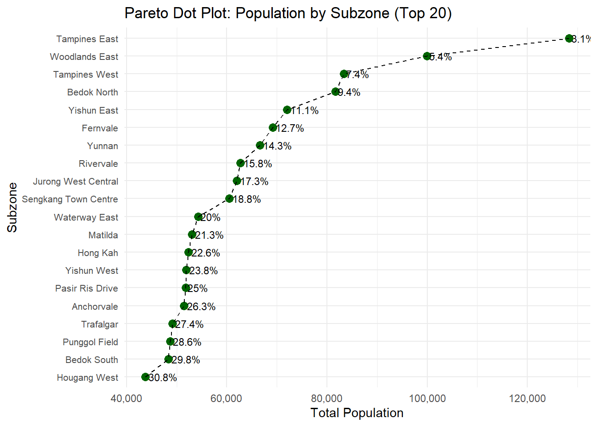

pacman::p_load(tidyverse, haven,
ggrepel, ggthemes,
ggridges, ggdist,
patchwork, scales, ggExtra)Take-home_Exercise01
tidyverse
haven
ggrepel
ggthemes
ggridges
ggdist
patchwork
scales
Creating enlightening and truthful data visualizations
Overview
Setting the scene
A local online media company that publishes daily content on digital platforms is planning to release an article on demographic structures and distribution of Singapore in 2024.
Our task
Assuming the role of the graphical editor of the media company, you are tasked to prepare at most three data visualisation for the article.The data should be processed by using appropriate tidyverse family of packages and the data visualisation must be prepared using ggplot2 and its extensions.
Getting Started
Loading packages
We load the following R packages using the pacman::p_load() function:
tidyverse: Core collection of R packages designed for data science.
haven: To read in data formats such as SAS and SPSS.
ggrepel: to provides geoms for ggplot2 to repel overlapping text labels.
ggthemes: to use additional themes for ggplot2.
patchwork: to prepare composite figure created using ggplot2.
ggridges: to plot ridgeline plots.
ggdist: for visualizations of distributions and uncertainty.
scales: provides the internal scaling infrastructure used by ggplot2.
Import data
To accomplish the task, Singapore Residents by Planning Area / Subzone, Single Year of Age and Sex, June 2024 dataset shares by Department of Statistics, Singapore (DOS) should be used.
The code chunk below imports respopagesex2024.csv into R environment by using read_csv()function of readr package. readr is one of the tidyverse package.
We import this dataset as sgresident
sgresident <- read_csv("respopagesex2024.csv ")Data pre-processing
We first take a look at the data and check if there are any duplicates.
Glimpse of data
Using the glimpse() function, we see that the dataset consists of 60,424 rows and 6 columns. It also shows the data type of each columns and first few entries of each columns.
glimpse(sgresident)Rows: 60,424
Columns: 6
$ PA <chr> "Ang Mo Kio", "Ang Mo Kio", "Ang Mo Kio", "Ang Mo Kio", "Ang Mo K…
$ SZ <chr> "Ang Mo Kio Town Centre", "Ang Mo Kio Town Centre", "Ang Mo Kio T…
$ Age <chr> "0", "0", "1", "1", "2", "2", "3", "3", "4", "4", "5", "5", "6", …
$ Sex <chr> "Males", "Females", "Males", "Females", "Males", "Females", "Male…
$ Pop <dbl> 10, 10, 10, 10, 10, 10, 10, 10, 30, 10, 20, 10, 20, 30, 30, 10, 3…
$ Time <dbl> 2024, 2024, 2024, 2024, 2024, 2024, 2024, 2024, 2024, 2024, 2024,…Check for duplicates
Using the duplicated() function, we see that there are no duplicate entries in the data.
sgresident[duplicated(sgresident),]# A tibble: 0 × 6
# ℹ 6 variables: PA <chr>, SZ <chr>, Age <chr>, Sex <chr>, Pop <dbl>,
# Time <dbl>There is 0 rows that has duplicated results. The next step will be changing the inappropriate data type and checking for missing values as we needed. Due there are only 6 columns (which means 6 variables only), it is not neccessary for us to filter variables anymore.
Change data type of selected variables
Variables with inappropriate data type are Age, Sex, Time. Starting from Age:
The as.numeric() function in R is a crucial tool for data manipulation, allowing users to convert data into numeric form.
sgresident <- sgresident %>%
mutate(Age = as.numeric(Age))Converting Sex column for better visualization, especially for consistent ordering and coloring in plots. Coloring in plots especially assign specific colors in ggplot2 will be easier. Converting Sec column to a factor with explicit levels: “Males” and “Females”. This can prevent mismatches or typos.
sgresident <- sgresident %>%
mutate(Sex = factor(Sex, levels = c("Males", "Females")))Making sure about the Time column consisted of discrete numbers, transforming Time from
sgresident <- sgresident %>%
mutate(Time = as.integer(Time))Check for missing values
Many datasets store missing data as text placeholders like “NA” and “NULL”. But in R ecosystem, “NA” may not be recognized. Coverting data first can expose hidden issues and make accurate statistical summaries like using mean() and boxplot() functions. is.na() function can checkthe missing values for each columns.
colSums(is.na(sgresident )) PA SZ Age Sex Pop Time
0 0 664 0 0 0 The age column has 664 missing values, which have been stored as strings before data type conversion. In this case, we do not need to remove those data.
Preview pre-processed dataframe
We use the function head() to preview the first few rows of the pre-processed dataframe:
head(sgresident, 200)# A tibble: 200 × 6
PA SZ Age Sex Pop Time
<chr> <chr> <dbl> <fct> <dbl> <int>
1 Ang Mo Kio Ang Mo Kio Town Centre 0 Males 10 2024
2 Ang Mo Kio Ang Mo Kio Town Centre 0 Females 10 2024
3 Ang Mo Kio Ang Mo Kio Town Centre 1 Males 10 2024
4 Ang Mo Kio Ang Mo Kio Town Centre 1 Females 10 2024
5 Ang Mo Kio Ang Mo Kio Town Centre 2 Males 10 2024
6 Ang Mo Kio Ang Mo Kio Town Centre 2 Females 10 2024
7 Ang Mo Kio Ang Mo Kio Town Centre 3 Males 10 2024
8 Ang Mo Kio Ang Mo Kio Town Centre 3 Females 10 2024
9 Ang Mo Kio Ang Mo Kio Town Centre 4 Males 30 2024
10 Ang Mo Kio Ang Mo Kio Town Centre 4 Females 10 2024
# ℹ 190 more rowsEDA 1:Age-Sex population pyramid
Population Pyramid (Singapore, 2024) This population pyramid displays Singapore’s age distribution in 2024 by gender. The left side represents male population counts, while the right shows female counts. A symmetrical shape is observed through most of the age range, though older ages (70+) show a higher proportion of women, reflecting longer female life expectancy. The peak is concentrated between ages 30 to 50, indicative of a mature working-age population.
The code chunk below shows the Age-Sex population pyramid:
pyramid_data <- sgresident %>%
group_by(Age, Sex) %>%
summarise(Pop = sum(Pop), .groups = "drop") %>%
mutate(Pop = ifelse(Sex == "Males", -Pop, Pop))
ggplot(pyramid_data, aes(x = Age, y = Pop, fill = Sex)) +
geom_bar(stat = "identity", width = 1) +
coord_flip() +
scale_y_continuous(labels = abs) +
scale_fill_manual(values = c("Males" = "#1f77b4", "Females" = "#ff7f0e")) +
labs(
title = "Population Pyramid (Singapore, 2024)",
x = "Age", y = "Population Count"
) +
theme_minimal()EDA 2: Pareto Dot Plot – Total Population by Top 20 subzones
This Pareto dot plot visualizes the 20 most populous subzones in Singapore in 2024, sorted in descending order by population. Each dot represents a subzone, while the dotted line tracks the cumulative percentage of the total population covered. The plot reveals that just a few subzones, contribute a disproportionately large share of the national population. The cumulative line provides a clear demarcation of the “vital few” subzones that drive national population density.
pareto_sz <- sgresident %>%
group_by(SZ) %>%
summarise(Total_Pop = sum(Pop), .groups = "drop") %>%
arrange(desc(Total_Pop)) %>%
mutate(
Cum_Perc = cumsum(Total_Pop) / sum(Total_Pop) * 100,
SZ = factor(SZ, levels = rev(SZ))
)
# show only top 20 subzones
pareto_sz_top <- pareto_sz %>% slice_max(Total_Pop, n = 20)
ggplot(pareto_sz_top, aes(x = reorder(SZ, Total_Pop), y = Total_Pop)) +
geom_point(color = "darkgreen", size = 3) +
geom_line(aes(group = 1), linetype = "dashed") +
geom_text(aes(label = paste0(round(Cum_Perc, 1), "%")),
hjust = -0.1, size = 3) +
scale_y_continuous(labels = comma) +
coord_flip() +
labs(
title = "Pareto Dot Plot: Population by Subzone (Top 20)",
x = "Subzone", y = "Total Population"
) +
theme_minimal() +
theme(axis.text.y = element_text(size = 8))
EDA 3: Box Plot with Data Superimposed – Population by Age Group (30–49), Across Planning Areas (2024)
Data values superimposed on the box plots to aid in visualization. Center lines show the medians, box limits indicate the 25th and 75th percentiles as determined by R software, whiskers extend 1.5 times the interquartile range from the 25th and 75th percentiles, outliers are represented by dots, and data points are plotted as open circles.This faceted box plot displays population distributions for ages 30–49 across six major planning areas. Within each PA, age groups are compared using boxplots with superimposed data points. Tampines and Bedok show relatively high and consistent populations across all age bands, while others like Sengkang and Punggol show peaks around 35–44, reflecting their family-centric demographic. The log scale highlights disparities between dense and sparse subzone populations.
# Step 1: Prepare data
df_pa_box <- sgresident %>%
mutate(
Age = as.numeric(Age),
AgeGroup = cut(
Age,
breaks = seq(0, 100, by = 5),
right = FALSE,
include.lowest = TRUE,
labels = paste(seq(0, 95, by = 5), seq(4, 99, by = 5), sep = "-")
)
) %>%
filter(Age >= 30, Age < 50) %>%
drop_na(AgeGroup)
# Optional: focus only on top 6 PAs for readability
top6_pa <- df_pa_box %>%
group_by(PA) %>%
summarise(Total_Pop = sum(Pop)) %>%
arrange(desc(Total_Pop)) %>%
slice_head(n = 6) %>%
pull(PA)
df_pa_box <- df_pa_box %>% filter(PA %in% top6_pa)
# Step 2: Boxplot with jittered data, faceted by PA
ggplot(df_pa_box, aes(x = AgeGroup, y = Pop)) +
geom_boxplot(fill = "steelblue", alpha = 0.6, outlier.shape = NA) +
geom_jitter(width = 0.2, alpha = 0.4, color = "black", size = 0.8) +
scale_y_log10() +
facet_wrap(~ PA, scales = "free_y") +
labs(
title = "Population Distribution by Age Group (30–49), Faceted by Planning Area",
x = "Age Group", y = "Population (log scale)"
) +
theme_minimal() +
theme(axis.text.x = element_text(angle = 45, hjust = 1))Summary and conclusion
This report presents three curated visualizations that highlight key patterns in Singapore’s demographic structure for 2024, based on official data from the Department of Statistics.
The Age-Sex Population Pyramid reveals a balanced gender distribution across most age groups, with a noticeable dominance of females beyond age 70 due to higher life expectancy. The working-age population (30–50) remains the largest cohort.
The Pareto Dot Plot of Subzones demonstrates the classic 80/20 principle, with a small number of subzones contributing disproportionately to the national population. This indicates spatial concentration and potential pressure points for urban planning.
The Box Plot of Population by Age Group (30–49) Across Planning Areas compares how the middle-aged population is distributed within Singapore’s most populous PAs.